Value-at-risk and GARCH
Christian Groll
Seminar für Finanzökonometrie, Ludwig-Maximilians-Universität M�nchen.
All rights reserved.
Contents
Although the previous parts of the script shall not be understood as rigorous scientific investigation of the topics treated, they nevertheless demonstrate some first indications that simple regression models or curve fitting techniques do not provide the desired informational gains in financial applications. The deterministic and predictable part of stock prices is usually too small, compared with the large uncertainty that is involved. Hence, stock market prices are commonly perceived as stochastic, so that they are best described in the framework of probability theory. This part of the course shall introduce some of the basic concepts used to capture the stochasticity in stock prices.
Required functions
garchestimation
Monte Carlo simulation
As part of the standard MATLAB program the function rand() enables simulation of uniformly distributed pseudo random variables. This is one of the most important tools for financial econometrics. However, the key to understanding this importance is to understand that these uniformly distributed simulated values can be transformed to samples of any given distribution function by a simple transformation.
% init params n = 1000; % sample size nBins = 20; % number of points per bin % simulate from uniform distribution simU = rand(n, 1); % check appropriateness hist(simU, nBins) % calculate expected number of bins expNum = n/nBins; % include horizontal line at expected number of points per bin line([0 1], expNum*[1 1], 'Color', 'r') title(['sample size: ' num2str(n) ' / expected points per bin: '... num2str(expNum)])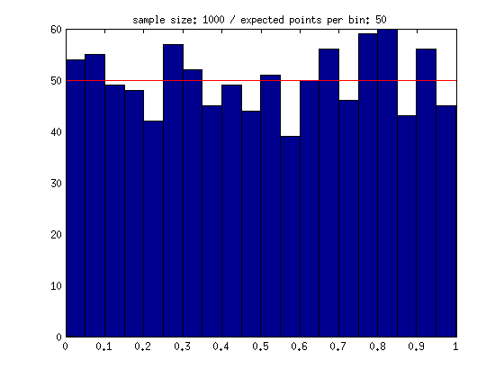
In order to simulate random numbers of different distributions, one has to make use of the fact that the inverse cumulative distribution function F^(-1), applied to a uniformly distributed random variable simU, generates a random vector with cumulative distribution equal to F. This theorem is called inverse probability integral transformation (PIT), and can be best understood by looking at a graphical visualization. Here, we use the normal distribution as an example.
% init params n2 = 10; % sample size mu = 4; % params distribution sigma = 1; % show first n2 points of simU on y-axis close scatter(zeros(n2, 1), simU(1:n2), 'r.') hold on; % plot cumulative distribution function grid = 0:0.01:8; vals = normcdf(grid, mu, sigma); plot(grid, vals) % scatter resulting values after inverse PIT X = norminv(simU, mu, sigma); scatter(X(1:n2), zeros(n2, 1), 'r.') % plot lines between points to indicate relation for ii=1:n2 % horizontal line, beginning in uniform sample point line([0 X(ii)], [simU(ii) simU(ii)], 'Color', 'r',... 'LineStyle', ':') % vertical line, beginning in new point, up to function line([X(ii) X(ii)], [0 simU(ii)], 'Color', 'r', 'LineStyle', ':') end title('Inverse probability integral transformation')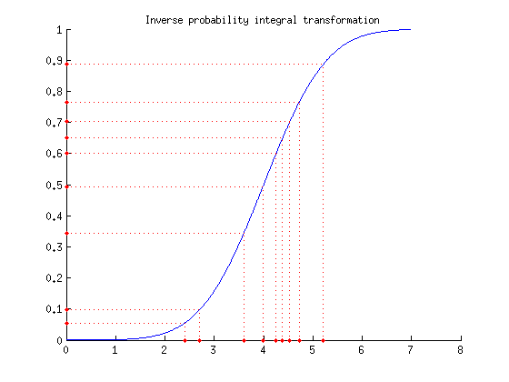
As can be seen, points in the middle of the [0 1] interval encounter a very steep slope of the cumulative distribution function, so that the distances between those points are effectively reduced. Hence, the associated area on the x-axis will exhibit an accumulation of sample points. In contrast to that, points in the outer quantiles of the distribution will encounter a very shallow slope, and hence will be taken further apart of each other.
In order to show that this distortion happens exactly in the required way to produce sample points of the predetermined distribution, one can compare the relative frequencies of the sample points with the probability density function of the targeted distribution.
figure('position', [50 50 1200 600]) % plot histogram, normalized to entail area of one subplot(1, 2, 1); [counterU locationsU] = hist(simU, nBins); % count points in bins width = diff(locationsU(1:2)); % get bin width bar(locationsU, counterU/(n*width), 1); % Rescale bins to sum up % to area 1. Without adjustment, area is number of points % time bin width. hold on; % include underlying uniform distribution plot([0 1], [1 1], 'r', 'LineWidth', 2) title('relative frequencies of uniform distribution') % plot histogram of transformed sample points, normalized subplot(1, 2, 2); [counterX locationsX] = hist(X, nBins); width = diff(locationsX(1:2)); bar(locationsX, counterX/(n*width), 1); hold on; % include underlying normal distribution grid = mu-4:0.1:mu+4; plot(grid, normpdf(grid, mu, sigma), 'r', 'LineWidth', 2); title('relative frequencies of normal distribution')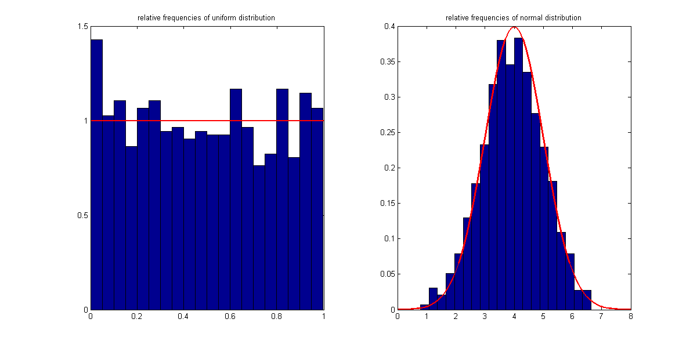
Hence, given any distribution function, we now are capable of simulating samples of it. However, in practice we usually encounter a different problem : we observe some data, but do not know the underlying distribution function, which has to be estimated based on the data.
We will now implement code to estimate the parameters of a given distribution function based on maximum likelihood. In order to get an impression of how good the estimation step performs, we will adapt it to simulated data with known underlying distribution first.
The likelihood of a given sample point is defined as the value of the probability density function. Furthermore, the likelihood of a given sample with more than one point is defined as the product of the individual likelihoods.
% init params example n = 1000; % number sample points mu = 2; sigma = 1; points = normrnd(mu, sigma, n, 1); % simulate data points % likelihood first point only lh1 = (sigma^2*2*pi)^(-0.5)*exp((-0.5)*(points(1)-mu)^2/sigma^2); fprintf(['\nThe likelihood of the first point is given by '... num2str(lh1) '.\n']) fprintf(['It also can be calculated using an '... 'existing MATLAB function:\n'... 'normpdf(points(1), mu, sigma) = ' ... num2str(normpdf(points(1), mu, sigma))... '.\n'])
The likelihood of the first point is given by 0.34788. It also can be calculated using an existing MATLAB function: normpdf(points(1), mu, sigma) = 0.34788.
% calculate lh for all individual points lhs = normpdf(points, mu, sigma); % multiply first k points for each k up to 10 cumulatedLikelihoods = cumprod(lhs(1:10))'
cumulatedLikelihoods =
Columns 1 through 7
0.3479 0.0805 0.0145 0.0031 0.0013 0.0002 0.0001
Columns 8 through 10
0.0000 0.0000 0.0000
As can be seen, through multiplication the absolute value of the overall likelihood becomes vanishingly small very fast. This imposes numerical problems to the process of calculation, since MATLAB only uses a finite number of decimal places. Hence, parameter estimation is always done by maximization of the log-likelihood function. Note that multiplication of individual likelihoods becomes summation under the transformation to log-likelihoods.
% calculate log-likelihood for sample points llh = -0.5*log(sigma^2*2*pi)-0.5*(points-mu).^2/sigma^2; % show cumulate sum cumulatedSum = cumsum(llh(1:10))'
cumulatedSum = Columns 1 through 7 -1.0559 -2.5198 -4.2323 -5.7628 -6.6836 -8.3598 -9.4273 Columns 8 through 10 -11.3262 -12.9851 -16.6507
As can be seen, using log-likelihood does not cause the same numerical problems. Now, let's create an anonymous function that takes the parameters of the normal distribution and the sample points as input, and calculates the negative log-likelihood. This function subsequently can be used in the optimization routine.
% anonymous function nllh = @(params, data)sum(0.5*log(params(2)^2*2*pi)+... 0.5*(data-params(1)).^2/params(2)^2); % note: in order to % fulfill the requirements of the subsequent % optimization, the argument that shall be optimized % has to be given first, with all parameters % contained in one vector! % check correctness with existing MATLAB function negLogLikelihoods = ... [nllh([mu sigma], points) normlike([mu sigma], points)]
negLogLikelihoods =
1.0e+03 *
1.4363 1.4363
Obviously, both values are identical.
Since the parameter sigma of the normal distribution may not take on negative values, we are confronted with a constrained optimization problem. Hence, we have to use the function fmincon.
% simulate random points from normal distribution points = normrnd(mu, sigma, 1000, 1); % standard normal as first guess params0 = [0 1]; % specify bounds on parameters lb = [-inf 0.1]; ub = [inf inf]; % set options for optimization opt = optimset('algorithm', 'interior-point', 'TolX', 1e-14); % three ways to perform optimization: using anonymous function paramsHat1 = ... fmincon(@(params)nllh(params, points), params0, ... [], [], [], [], lb, ub, [], opt); % different way, using anonymous function paramsHat2 =... fmincon(nllh, params0, ... [], [], [], [], lb, ub, [], opt, points); % using existing MATLAB function paramsHat3 =... fmincon(@(params)normlike(params, points), params0, ... [], [], [], [], lb, ub, [], opt); % showing wrong syntax using existing function try paramsHat4 =... fmincon(normlike, params0, ... [], [], [], [], lb, ub, [], opt, points); catch err fprintf(['MATLAB displays the following error:\n"'... err.message '"\n']); end
Local minimum possible. Constraints satisfied. fmincon stopped because the size of the current step is less than the selected value of the step size tolerance and constraints are satisfied to within the default value of the constraint tolerance. Local minimum possible. Constraints satisfied. fmincon stopped because the size of the current step is less than the selected value of the step size tolerance and constraints are satisfied to within the default value of the constraint tolerance. Local minimum possible. Constraints satisfied. fmincon stopped because the size of the current step is less than the selected value of the step size tolerance and constraints are satisfied to within the default value of the constraint tolerance. MATLAB displays the following error: "Requires two input arguments"
While the first three optimization calls stop regularly, the fourth syntax produces an error as predicted. Comparison of the estimated parameters of the successful optimizations show equally good results for all three.
% compare results of different optimizations with real values compareToRealParams = [mu sigma; paramsHat1; ... paramsHat2; paramsHat3]
compareToRealParams =
2.0000 1.0000
1.9978 0.9765
1.9978 0.9765
1.9978 0.9765
Now that we successfully estimated the underlying normal distribution, we want to try the same estimation procedure for a Student's t-distribution.
% init params n = 1000; nu = 4; % simulate values per inverse PIT X = tinv(rand(n, 1), nu); % determine individual likelihoods for vector of observations lh = @(nu, X)gamma((nu+1)/2)*(nu*pi)^(-0.5)/gamma(nu/2)... *(1+X.^2/nu).^(-(nu+1)/2);
Note: function lh returns a vector itself. See for example:
outputDimension = size(lh(4, X))
outputDimension =
1000 1
Define function nllh_t that calculates the negative overall log-likelihood based on the output of function lh.
% taking log of each entry and summing up
nllhT = @(nu, X)-sum(log(lh(nu, X)));
Specify optimization settings and conduct optimization.
% init guess param0 = 10; % boundary constraints lb = 0.1; ub = inf; % optimization paramHat = fmincon(nllhT, param0, [], [], [], [], ... lb, ub, [], [], X);
Warning: To use the default trust-region-reflective algorithm you must supply the gradient in the objective function and set the GradObj option to 'on'. FMINCON will use the active-set algorithm instead. For information on applicable algorithms, see Choosing the Algorithm in the documentation. Local minimum possible. Constraints satisfied. fmincon stopped because the predicted change in the objective function is less than the default value of the function tolerance and constraints are satisfied to within the default value of the constraint tolerance. No active inequalities.
Note that MATLAB displays a warning message, indicating that the currently used searching algorithm might not be accurate. You can switch to any of the suggested algorithms by changing the respective property of the optimization options structre via optimset(). Nevertheless, the results obtained are not too bad after all.
% compare with real parameter
compareToRealParam = [nu paramHat]
compareToRealParam =
4.0000 3.8345
Application to real data
Now we want to examine whether observed returns in the real world approximately follow a normal distribution. As first example we will chose the German stock market index for our investigation.
% specify ticker symbol as string variable tickSym = '^GDAXI'; % specify stock data of interest % specify beginning and ending as string variables dateBeg = '01011990'; % day, month, year: ddmmyyyy dateEnd = datestr(today, 'ddmmyyyy'); % today as last date % load data daxCrude = hist_stock_data(dateBeg, dateEnd, tickSym); % process data [DAX.dates DAX.prices] = processData(daxCrude); % calculate percentage log returns DAX.logRet = 100*(log(DAX.prices(2:end))-log(DAX.prices(1:end-1)));
Fitting parameters of normal distribution to data.
% init bounds lb = [-inf 0.001]; ub = [inf inf]; % optimization settings opt = optimset('display', 'off', 'algorithm', 'sqp'); % estimate normal distribution parameters paramsHat = ... fmincon(nllh, params0, ... [], [], [], [], lb, ub, [], opt, DAX.logRet); % compare parameters with estimation from existing function [muHat sigmaHat] = normfit(DAX.logRet); paramComparison = [paramsHat; muHat sigmaHat]
paramComparison =
0.0306 1.4536
0.0306 1.4537
In order to examine the goodness-of-fit of the estimated normal distribution, some visualizations can be helpful. First, a normalized histogram of the data shall be compared to the probability density function of the fitted distribution. Moreover, as the largest financial risks are located in the tails of the distribution, the figure also shall show a more amplified view on the lower tail.
% show normalized histogram with density of normal distribution [counterX locationsX] = hist(DAX.logRet, 50); width = diff(locationsX(1:2)); % show bar diagram in first subplot figure('position', [50 50 1200 600]) subplot(1, 2, 1); bar(locationsX, counterX/(numel(DAX.logRet)*width), 1); hold on; % init grid grid =... paramsHat(1)-5*paramsHat(2):0.01:paramsHat(1)+5*paramsHat(2); % include underlying normal distribution plot(grid, normpdf(grid, paramsHat(1), paramsHat(2)), ... 'r', 'LineWidth', 2); title('relative frequencies with normal distribution') % show lower tail region amplified subplot(1, 2, 2); hold on; bar(locationsX, counterX/(numel(DAX.logRet)*width), 1); plot(grid, normpdf(grid, paramsHat(1), paramsHat(2)), ... 'r', 'LineWidth', 2); axis([paramsHat(1)-7*paramsHat(2) paramsHat(1)-2*paramsHat(2)... 0 0.02]) title('lower tail') hold off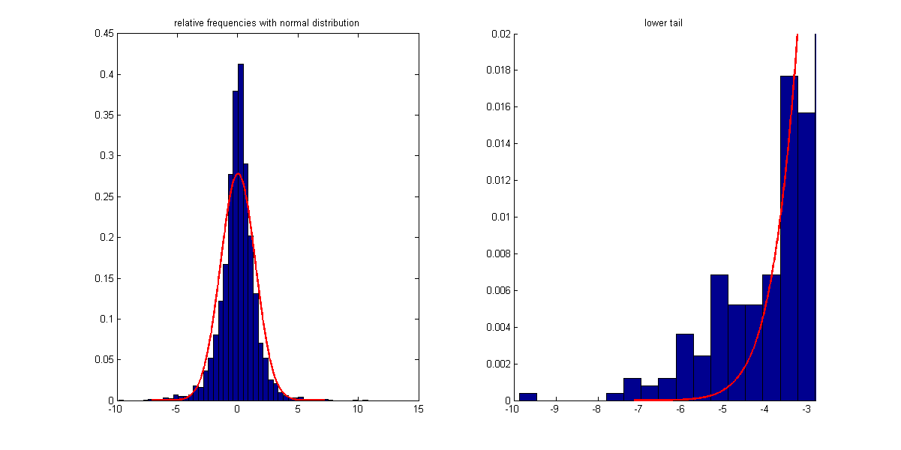
As the amplification of the comparison of the lower tails shows, the relative frequency of extremely negative realizations is much larger than what would be suggested by the normal distribution. This indicates that the shape of the normal distribution is not able to provide a good fit to the realizations of stock returns observed. Another way to visualize the deviations between normal distribution modeling and reality is the QQ-plot.
In order to compare the quantiles of the empirical returns with the quantiles of a given distribution function using MATLAB's qq-plot function, we need to specify the respective distribution by handing over simulated sample points with given distribution.
close % close previous figure figure('position', [50 50 1200 600]) subplot(1, 2, 1) % generate sample points of given distribution sample = normrnd(paramsHat(1), paramsHat(2), numel(DAX.logRet), 1); % qq-plot: empirical returns vs. estimated normal distribution qqplot(DAX.logRet, sample); title('built-in qqplot') xLimits = get(gca, 'xLim'); yLimits = get(gca, 'yLim');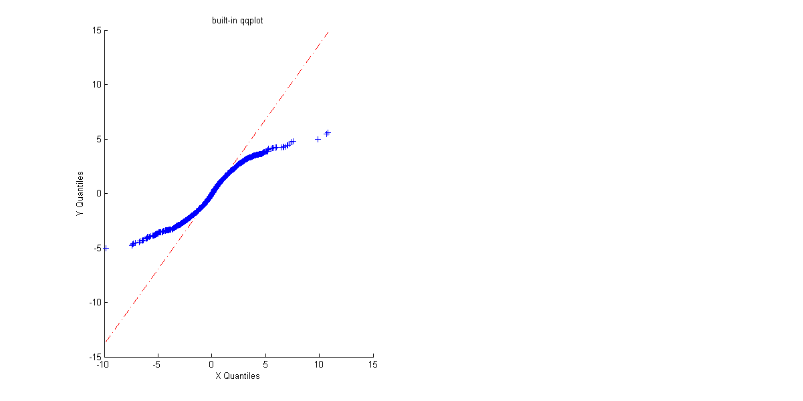
To avoid the imprecision caused by the determination of the function via sample values, and to get a more detailed understanding of the concept of qq-plots, we now want to reproduce the shown graphic with own code. Thereby the main idea of a qq-plot is to plot quantiles corresponding to an equidistant grid of probabilities against each other. While quantiles of the normal distribution can be calculated, quantiles refering to the distribution of the observed data points are approximated with the respective empirically estimated values.
% arrange entries in chronological order sorted = sort(DAX.logRet); % init grid of equidistant probabilities associatedCDFvalues = ((1:numel(sorted))/(numel(sorted)+1)); % associated ecdf values increase with fixed step size format rat associatedCDFvalues(1:4) format short
ans =
1/5761 2/5761 3/5761 4/5761
% get associated normal quantile values convertToNormalQuantiles = ... norminv(associatedCDFvalues, paramsHat(1), paramsHat(2)); % generate qq-plot subplot(1, 2, 2) scatter(sorted, convertToNormalQuantiles, '+'); shg xlabel('empirical quantiles') ylabel('quantiles normal distribution') set(gca, 'xLim', xLimits, 'yLim', yLimits); title('manually programmed qq-plot') % include straight line to indicate matching quantiles line(xLimits, xLimits, 'LineStyle', '-.', 'Color', 'r')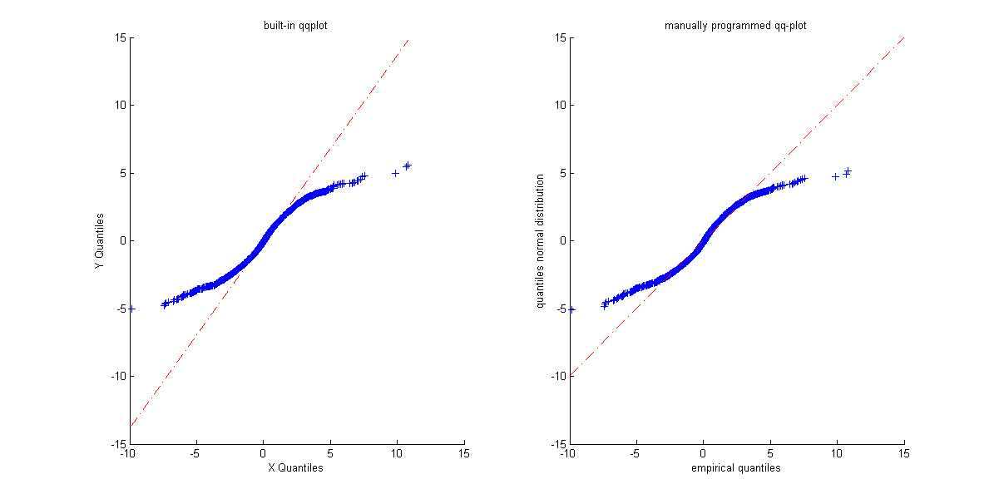
Again, the qq-plot shows that the empirical quantiles in the lower tail are lower than suggested by the normal distribution. This is a commonly observable pattern of financial data, and it is refered to as fat tails.
VaR
With these insights in mind, we now want to estimate the value-at-risk for the German stock index. The value-at-risk associated with a given asset is nothing else than a lower quantile of the distribution of returns. Hence, a value-at-risk of confidence level 95% denotes nothing else than a return level that is fallen short of at maximum 5% of the times. This value will be estimated on three different ways.
% init different value-at-risk confidence levels quants = [0.005 0.01 0.05]; % estimate VaR based on fitted values of normal distribution varNorm = norminv(quants, paramsHat(1), paramsHat(2));
Estimate DoF parameter for Student's t-distribution.
% determine individual likelihoods for a points vector lh = @(nu, X)gamma((nu+1)/2)*(nu*pi)^(-0.5)/gamma(nu/2)... *(1+X.^2/nu).^(-(nu+1)/2); % define function taking log of each entry and summing up nllhT = @(nu, X)-sum(log(lh(nu, X))); % init guess param0 = 10; % boundary constraints lb = 0.1; ub = inf; % set options for optimization opt = optimset('algorithm', 'sqp'); % optimization paramHatT = fmincon(nllhT, param0, [], [], [], [], ... lb, ub, [], opt, DAX.logRet);
Local minimum possible. Constraints satisfied. fmincon stopped because the size of the current step is less than the default value of the step size tolerance and constraints are satisfied to within the default value of the constraint tolerance.
Associated value-at-risk estimations are given as the quantiles of the fitted Student's t-distribution and can be calculated by inversion.
% apply inverse cumulative distribution function varT = icdf('t', quants, paramHatT);
As third alternative, the value-at-risk can be estimated directly based on the observed returns as empirical quantiles.
% estimate VaR based on empirical quantiles varEmp = quantile(DAX.logRet, quants); % compare different VaR estimations compareVaRs = [quants' varNorm' varT' varEmp'] % display labels of columns below fprintf('\nConfLevels Norm Distr T Distr Emp Quants\n')
compareVaRs =
0.0050 -3.7135 -5.0768 -5.2577
0.0100 -3.3509 -4.0550 -4.4108
0.0500 -2.3603 -2.2208 -2.3123
ConfLevels Norm Distr T Distr Emp Quants
As can be seen, the estimated values of VaR are quite different for different estimators. In contrast to the normal distribution, the Student's t-distribution assigns more probability to tail regions, which results in more extreme quantile values. However, this result does not yet automatically imply that a Student's t-distribution is the more appropriate distribution. In order to check both distributions for their goodness, we have to compare them in a backtesting procedure.
Backtesting
For reasons of space we want to conduct the visual analysis only for one level of confidence. However, figures of the other confidence levels easily can be accessed through changing the determining index variable lev.
% init confidence level as index of variable quants lev = 2; figure('position', [50 50 1200 600]); % show exceedances for normal distribution subplot(1, 2, 1); % indicate exceedances with logical vector exceed = DAX.logRet <= varNorm(lev); % show exceedances in red scatter(DAX.dates([logical(0); exceed]), DAX.logRet(exceed), '.r') % first date entry left out since DAX.dates refers to % longer time series of prices hold on; % show non-exceedances in blue scatter(DAX.dates([logical(0); ~exceed]), ... DAX.logRet(~exceed), '.b') datetick 'x' set(gca, 'xLim', [DAX.dates(2) DAX.dates(end)]); % include VaR estimation line([DAX.dates(2) DAX.dates(end)], varNorm(lev)*[1 1], ... 'Color', 'k') title(['Exceedance frequency ' ... num2str(sum(exceed)/numel(DAX.logRet), 2) ' instead of '... num2str(quants(lev))]) % same plot with results based on Student's t-distribution subplot(1, 2, 2); exceed2 = DAX.logRet <= varT(lev); scatter(DAX.dates([logical(0); exceed2]), ... DAX.logRet(exceed2), '.r') hold on; scatter(DAX.dates([logical(0); ~exceed2]), ... DAX.logRet(~exceed2), '.b') datetick 'x' set(gca, 'xLim', [DAX.dates(2) DAX.dates(end)]); line([DAX.dates(2) DAX.dates(end)], varT(lev)*[1 1], ... 'Color', 'k') title(['Exceedance frequency ' ... num2str(sum(exceed2)/numel(DAX.logRet), 2) ' instead of '... num2str(quants(lev))])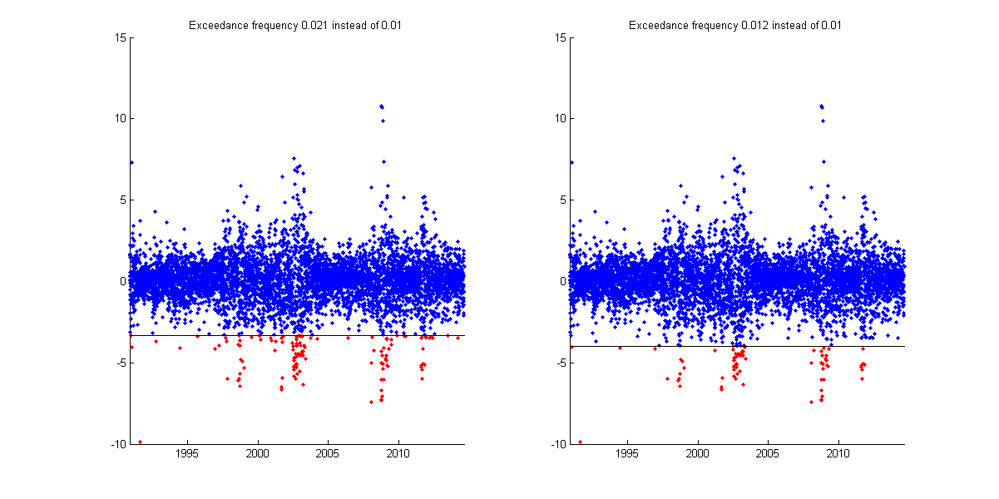
For further investigation of the goodness of the respective estimation approaches, all exceedance frequencies are compared to in a table.
% calculate exceedance frequencies for normal distribution normFrequ = ... [sum((DAX.logRet <= varNorm(1))/numel(DAX.logRet));... sum((DAX.logRet <= varNorm(2))/numel(DAX.logRet));... sum((DAX.logRet <= varNorm(3))/numel(DAX.logRet))]; % calcualte exceedance frequencies for Student's t-distribution tFrequ = ... [sum((DAX.logRet <= varT(1))/numel(DAX.logRet));... sum((DAX.logRet <= varT(2))/numel(DAX.logRet));... sum((DAX.logRet <= varT(3))/numel(DAX.logRet))]; % calculate exceedance frequencies for empirical quantiles empFrequ = ... [sum((DAX.logRet <= varEmp(1))/numel(DAX.logRet));... sum((DAX.logRet <= varEmp(2))/numel(DAX.logRet));... sum((DAX.logRet <= varEmp(3))/numel(DAX.logRet))]; % display table fprintf('\nExceedance frequencies:\n') fprintf('Norm distr t distr Emp distr\n') for ii=1:numel(quants) fprintf('%1.5f %1.5f %1.5f\n', ... normFrequ(ii), tFrequ(ii), empFrequ(ii)); end
Exceedance frequencies: Norm distr t distr Emp distr 0.01458 0.00642 0.00503 0.01997 0.01215 0.01007 0.04792 0.05538 0.05000
This analysis shows two commonly observable characteristics. First, the exceedance frequencies associated with the empirical estimator are almost exactly the size that we want to observe. However, this should not lead you to erroneously conclude that the empirical estimator is unambiguously the best estimator, since the perfect fit is only achieved in-sample, that is it is achieved only on the data that we used for estimation. This is a classical overfitting problem, since we adjusted the estimated quantiles to exactly match the observed data points in the first place. Examining the out-of-sample properties of the empirical estimator will show that it is not performing equally well when applied to "unseen" data.
And second, while all three estimators seem to approximately match the demanded exceedance frequencies, the occurrences of the exceedances are clustered through time. That is, exceedances are not distributed uniformly over time, but observing an exceedance at one day increases the likelihood of an additional exceedance within the next days. This weakness of all estimators arises from the fact that we dropped all information of the sample with respect to the time dimension, since we treated returns as i.i.d. realizations of a certain random variable. Hence, estimating risk more adequately requires modeling the observations as time series in order to be able to match temporarily evolving high-volatility phases.
Simulation study: empirical quantiles
In order to examine the properties of the empirical quantiles estimator we now will perform a short simulation study. The idea is to sample observations of a given distribution function, apply the empirical quantiles estimator to the sample data, and check whether we are able to approximately retrieve the quantile values of the original underlying distribution.
% init params reps = 10000; % number of repetitions sampSize = 2500; % approximately 10 years of data dist = 't'; % underlying distribution param = 5; % parameters: dimension depending on distr. nBins = 30; % number of bins in histogram plot % get real quantile values realQuants = icdf(dist, quants, param); % preallocate result matrix estQuants = zeros(reps, numel(quants)); % for each repetition we % will get estimated values for each confidence level % using for-loop, because of limited memory for ii=1:reps % simulate data sample simU = rand(sampSize, 1); sampData = icdf(dist, simU, param); % get empirical quantiles for this repetition estQuants(ii, :) = quantile(sampData, quants); end % plot results figure('position', [50 50 1200 600]) for ii=1:numel(quants) subplot(1, numel(quants), ii); hist(estQuants(:, ii), nBins) % include line indicating real quantile value yLimits = get(gca, 'yLim'); line(realQuants(ii)*[1 1], yLimits, 'Color', 'r') % calculate mean squared error mse = sum((estQuants(:, ii)-realQuants(ii)).^2)/reps; title(['Quantile: ' num2str(quants(ii), 2) ', MSE: ' ... num2str(mse, 3)]) end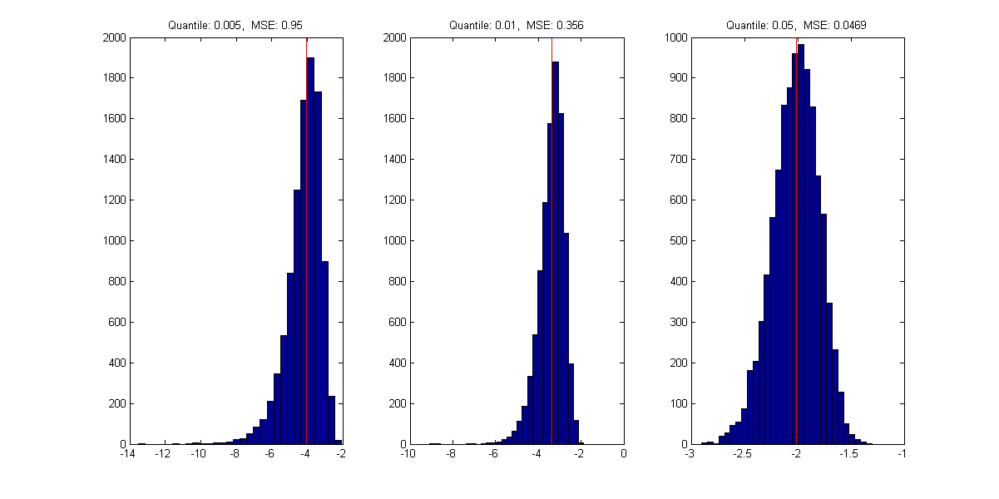
As indicated by the mean squared error as well as by the different scales of the x-axis, the goodness of the empirical quantile estimator decreases with decreasing quantile values. This is no surprise, since a sample of size 2500 on average only produces 12.5 observations below it's 0.005 quantile. Since the number of expected observations below the quantile value is the relevant size to the estimation procedure, the average performance of the estimator is rather poor.
Autoregressive processes
The main idea of time series analysis is to not consider observations as independent over time, but to admit an effect of past returns to the distribution of todays return. The most common way thereby is to render first and second moments conditional. We will start with time-varying first moments. A very helpful device to detect serial dependence is to estimate the autocorrelation function of the process.
% init params nLags = 20; % number of lags % estimate autocorrelation function autoCorrCoeff = zeros(1, nLags); for ii=1:nLags % get correlation between days of distance ii autoCorrCoeff(ii) = ... corr(DAX.logRet(1:end-ii), DAX.logRet(ii+1:end)); end % plot estimated autocorrelation function close figure('position', [50 50 1200 600]) subplot(1, 2, 1) stem(1:nLags, autoCorrCoeff, 'r.', 'MarkerSize', 12) set(gca, 'yLim', [-0.2 1]); set(gca, 'xGrid', 'on', 'yGrid', 'on') % plot autocorrelation using existing MATLAB function subplot(1, 2, 2) autocorr(DAX.logRet)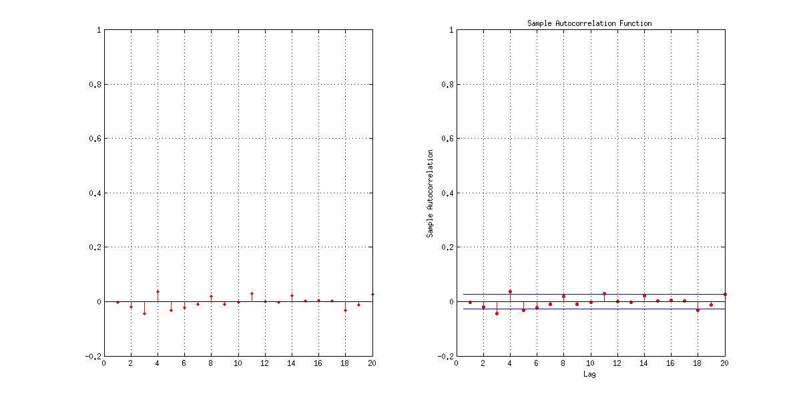
Though there might be evidence for autocorrelation at lags 3 and 4, there is rather no clear pattern observable. We now will try to replicate the observed autocorrelation function. First, we will investigate the properties of an AR(1) process by simulating a sample path of it.
% init params a = 0.4; % autoregression coefficient n = 10000; % path length sigma = 0.8; % standard deviation residual y0 = 0; % starting value % simulate data epsilons = normrnd(0, sigma, n, 1); y = zeros(n, 1); y(1, 1) = y0; % because of the recursive nature of autoregressive processes we % have to use for-loop for ii=2:n y(ii) = a*y(ii-1)+epsilons(ii); end % plot path close figure('position', [50 50 1200 600]) subplot(1, 2, 1); plot(y(1:150)) title('Simulated sample path') % plot associated empirical autocorrelation function subplot(1, 2, 2); autocorr(y)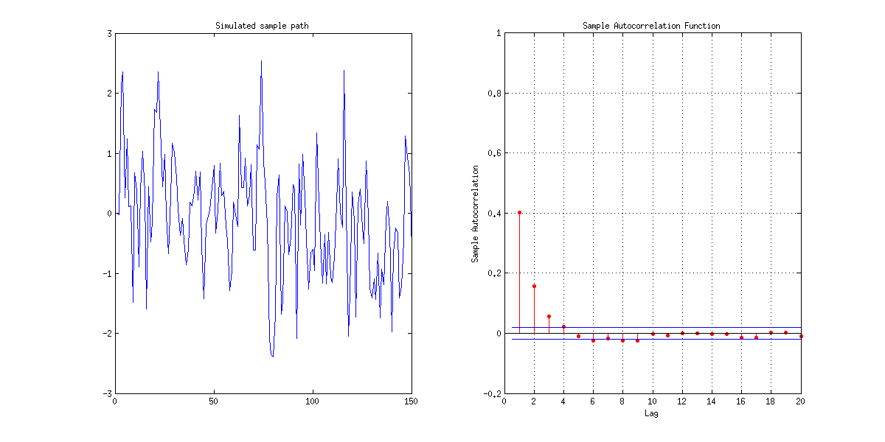
As can be seen, the autoregressive term of lag 1 causes a significant non-zero autocorrelation function in both first two lags. Since we observed a negative third lag and positive fourth lag, we will take a look at a fourth order autoregressive process.
% init params a3 = -0.1; a4 = 0.1; y0 = 0; y1 = 0; y2 = 0; y3 = 0; % simulate data epsilons = normrnd(0, sigma, n, 1); y = zeros(n, 1); y(1:4, 1) = [y0; y1; y2; y3]; for ii=5:n y(ii) = a3*y(ii-3)+a4*y(ii-4)+epsilons(ii); end % plot sample path close figure('position', [50 50 1200 600]) subplot(1, 2, 1); plot(y(1:150)) title('simulate sample path') % plot empirical autocorrelation function subplot(1, 2, 2); autocorr(y)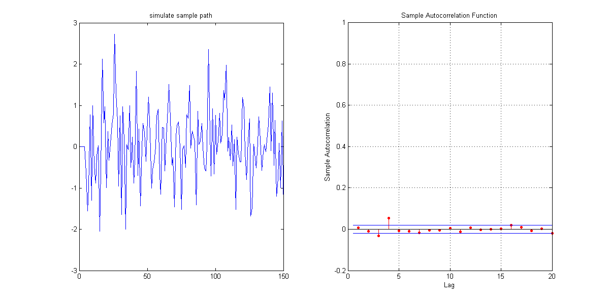
As both graphics indicate, there lies a great flexibility in AR-processes when it comes to replicating first-moment features of real data. However, it is very difficult to distinguish between stochastically evolved artificial patterns and real existing autocorrelated structures.
% Although the empirical autocorrelation function seems to % indicate that AR-processes could be able to replicate some % first-moment characteristics of observable financial time % series, there are some considerable differences in % the patterns of the second moments. One way to see this is by % looking at the empirical autocorrelation functions of squared % returns. % compare autocorrelation functions of squared returns close figure('position', [50 50 1200 600]) subplot(1, 2, 1); autocorr(DAX.logRet.^2) title('real data') subplot(1, 2, 2) autocorr(y.^2) title('simulated AR-data')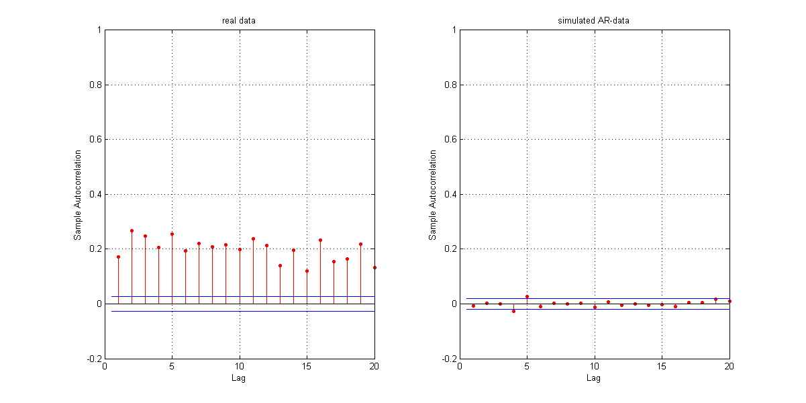
As can be seen, squared returns exhibit long-lasting and persistent autocorrelations. This result can be interpreted as follows: correlation between squared returns is an indication of correlation between absolute return sizes. That is, if we observe high absolute returns at previous days, there is a high likelihood of a high absolute return for today, too. In other words: if previous returns exhibit high volatilities (high absolute values), today's absolute return is more likely to be high itself, while low volatility of previous days is likely to be followed by a return with small absolute value itself. This observation matches with the volatility clusters observed before.
Fitting AR(2) processes
This is part of the homework.
GARCH(1,1)
Since autoregressive processes are not able to replicate the persistent volatilities observable at financial time series, we need to come up with another model, called GARCH (generalized autoregressive conditional heteroscedasticity). The idea associated with GARCH models is to render second moments conditional. That is, the model shall capture the pattern of financial time series that periods of high volatility are followed more likely by another high absolute return. Hence, the model treats the volatility prevailing at a certain point in time as conditional on the past realizations, with positive relationship between past volatility and conditional current volatility. Today's variance h(t) is modelled as linear function of yesterday's variance h(t-1) and yesterday's squared observation y(t-1).^2.
y(t) = sqrt(h(t))*epsilon(t) h(t) = k + GARCH*h(t-1) + ARCH*y(t-1)^2
In order to get a first impression about the model, we will first simulate some data with given parameters.
Since conditional distributions depend on yesterday's observation and standard deviation, the first simulated value of our path also needs some specification of the values of the previous days.
% starting values y0 = 0; sigma0 = 1; % init params sampSize = 10000; % path length % GARCH parameters: h(t)=k+GARCH*h(t-1)+ARCH*y(t-1)^2 garch = 0.6; arch = 0.2; k = 0.2; % preallocate y and sigma y = zeros(sampSize, 1); sigmas = zeros(sampSize, 1); % simulate standardized residuals epsilons = randn(sampSize, 1); % take first values as given y(1) = y0; sigmas(1) = sigma0; for ii=2:sampSize % calculate new sigma sigmas(ii) = ... sqrt(k+garch*sigmas(ii-1)^2 + arch*y(ii-1)^2); % multiply standardized residual with current standard dev. y(ii) = epsilons(ii)*sigmas(ii); end % visualization of simulated data patterns close figure('position', [50 50 1200 800]) % show sample path subplot(3, 2, 1:2); plot(y(1:600)) title('sample path') % show simulated series of conditional standard deviations subplot(3, 2, 3:4); plot(sigmas(1:600)) title('conditional standard deviations') % show autocorrelation functions subplot(3, 2, 5); autocorr(y) title('autocorr returns') set(gca, 'yLim', [-0.2 0.6]); subplot(3, 2, 6); autocorr(y.^2) set(gca, 'yLim', [-0.2 0.6]); title('autocorr squared returns')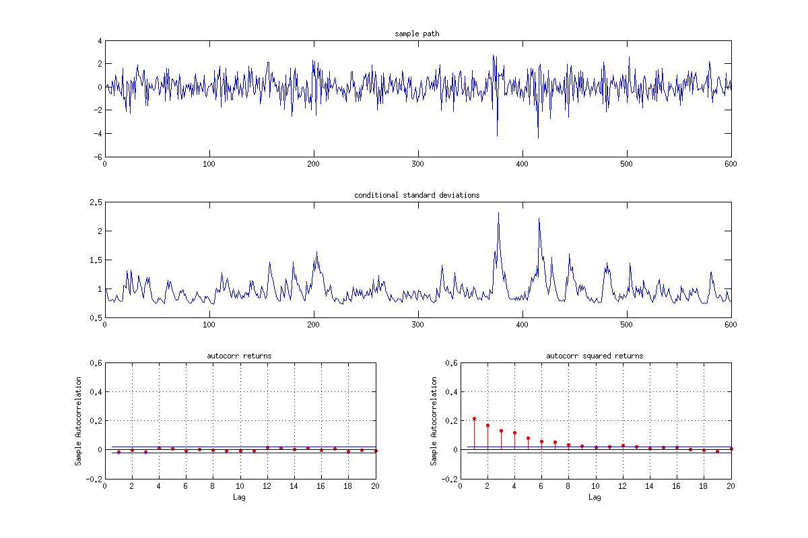
When looking at the visualization, some points become evident. First, the time series does exhibit volatility clusters of small scale. While there do appear short periods with relatively high standard deviations, the high volatility phases seem to disappear faster than in reality. And second, the model in general seems to be appropriate to generate persistent dependencies in absolute returns, measurable through the autocorrelation function applied to squared returns. Nevertheless, the persistency measured with the autocorrelation also drops faster than for comparable real data.
To break away from the distortions incorporated by arbitrarily chosing the parameters of the model, we now want to fit a GARCH model to empirical data via maximum likelihood. However, in order to get a better understanding about the individual steps of the fitting procedure, we first implement some stand-alone parts for simulated data.
% determine time series tSeries = y; % treat initial standard deviation and parameters as given initSigma = 1; params = [k garch arch];
The main point here is that once we are given the time series, the parameter values and the initial standard deviation, we are able to reconstruct the series of sigmas.
% preallocate reconstructed sigmas retrieveSigmas = zeros(numel(tSeries), 1); retrieveSigmas(1) = initSigma; % reconstruction for ii=2:numel(tSeries) % current sigmas depend on last sigma and last observation % through parameter values of the model retrieveSigmas(ii) = sqrt(params(1)+... params(2)*retrieveSigmas(ii-1)^2 + ... params(3)*tSeries(ii-1)^2); end
As verification, sigmas of simulated time series can be compared with those reconstructed.
figure('position', [50 50 1200 600]) subplot(2, 1, 1); plot(sigmas) title('simulated sigmas') subplot(2, 1, 2); plot(retrieveSigmas) title('retrieved sigmas')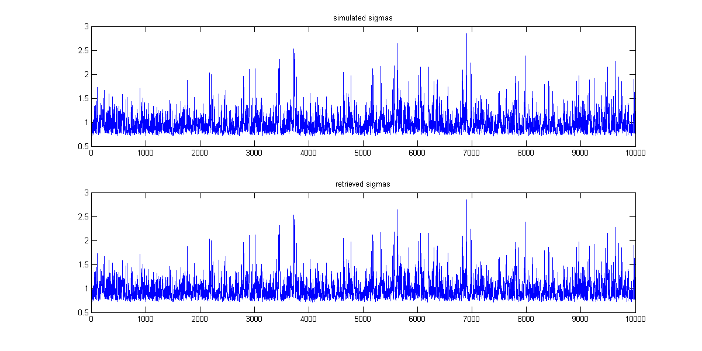
Given the reconstructed series of time-varying sigma values, we now can calculate the log-likelihood of the observed time series. Thereby observations are assumed to be conditionally normally distributed with standard deviation given by sigma.
% calculate negative log-likelihood nllh = sum(0.5*log(retrieveSigmas.^2*2*pi)+... 0.5*(tSeries.^2./retrieveSigmas.^2));
Since the series of retrieved sigmas depends on the selection of parameters and initial values, the negative log-likelihood also is influenced by these inputs. Hence, we can come up with a two-step estimation procedure, where in a first step the series of sigmas is retrieved, and in a second step the associated negative log-likelihood is calculated. Bundling both steps in one function, we get an objective function usable for optimization. This function is implemented as garchEstimation(). Now we will perform the estimation of the GARCH parameters.
% init params params0 = [0.1 0.1 0.1]; % linear parameter restrictions: params(2)+params(3)<1 A = [0 1 1]; b = 1; % lower and upper bounds lb = [0.01 0.01 0.01]; ub = [0.99 0.99 0.99]; % init vals data = y; initVals = [0 1]; % optimization settings opt = optimset('algorithm', 'sqp'); % optimization paramsHat = fmincon(... @(params)garchEstimation(params, data, initVals), params0, ... A, b, [], [], lb, ub, [], opt); compareToRealParams = [paramsHat; params]
Local minimum possible. Constraints satisfied.
fmincon stopped because the size of the current step is less than
the default value of the step size tolerance and constraints are
satisfied to within the default value of the constraint tolerance.
compareToRealParams =
0.2059 0.6038 0.1894
0.2000 0.6000 0.2000
Given our estimated values we are again able to extract a series of sigma values. These extracted sigma values give us an indication of whether there have been periods of high volatility in the time series or not. The following cell will perform the same analysis for real stock data.
% specify data data = DAX.logRet; % optimization settings opt = optimset('algorithm', 'sqp'); % optimization [paramsHat nllhVal] = fmincon(... @(params)garchEstimation(params, data, initVals), params0, ... A, b, [], [], lb, ub, [], opt); % extract estimated sigma series retrieveSigmas = zeros(numel(data), 1); retrieveSigmas(1) = initVals(2); % reconstruction for ii=2:numel(data) % current sigmas depend on last sigma and last observation % through parameter values of the model retrieveSigmas(ii) = sqrt(paramsHat(1)+... paramsHat(2)*retrieveSigmas(ii-1)^2 + ... paramsHat(3)*data(ii-1)^2); end % plot observed values with extracted sigmas close figure('position', [50 50 1200 600]) subplot(2, 1, 1); plot(DAX.dates(2:end), DAX.logRet) datetick 'x' set(gca, 'xLim', [DAX.dates(2) DAX.dates(end)]); subplot(2, 1, 2); plot(DAX.dates(2:end), retrieveSigmas) datetick 'x' set(gca, 'xLim', [DAX.dates(2) DAX.dates(end)]);
Local minimum possible. Constraints satisfied. fmincon stopped because the size of the current step is less than the default value of the step size tolerance and constraints are satisfied to within the default value of the constraint tolerance.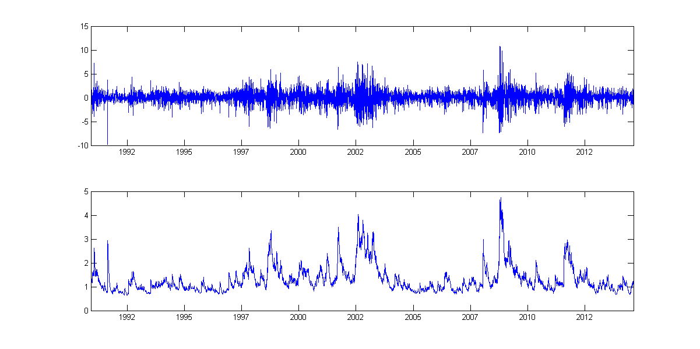
Since GARCH is one of the most important models in econometrics, all the standard applications associated with the model are already implemented in the econometrics toolbox of MATLAB. The framework is built on specification of GARCH models using a structure variable, which is the basic component to pass over model specifications between functions. As default model MATLAB has chosen the same GARCH(1,1) model with constant in the variance equation that we already have chosen above, with the one deviation that it also incorporates a constant term in the mean equation. However, we fit the default model to data without further specifications and compare it with our results so far.
% maximum likelihood estimation of parameters [coeff, errors, llf, innovations, sigmas, summary] = ... garchfit(DAX.logRet);
____________________________________________________________
Diagnostic Information
Number of variables: 4
Functions
Objective: internal.econ.garchllfn
Gradient: finite-differencing
Hessian: finite-differencing (or Quasi-Newton)
Nonlinear constraints: armanlc
Nonlinear constraints gradient: finite-differencing
Constraints
Number of nonlinear inequality constraints: 0
Number of nonlinear equality constraints: 0
Number of linear inequality constraints: 1
Number of linear equality constraints: 0
Number of lower bound constraints: 4
Number of upper bound constraints: 4
Algorithm selected
medium-scale: SQP, Quasi-Newton, line-search
____________________________________________________________
End diagnostic information
Max Line search Directional First-order
Iter F-count f(x) constraint steplength derivative optimality Procedure
0 5 9714.45 -0.05
1 16 9676.37 -0.06484 0.0156 -559 3.87e+03
2 24 9558.4 -0.08613 0.125 -1.64e+03 3.22e+03
3 34 9534.85 -0.1147 0.0312 -769 2.46e+03
4 43 9517.37 -0.1075 0.0625 -476 1.97e+03
5 49 9437.74 -0.07251 0.5 -465 1.52e+03
6 55 9389.59 -0.03626 0.5 -735 848
7 66 9388.81 -0.03569 0.0156 -212 1.97e+03
8 72 9374.79 -0.01785 0.5 -350 1.17e+03
9 83 9374.77 -0.0183 0.0156 -28.8 246
10 90 9374.55 -0.01699 0.25 -146 56.3
11 95 9374.55 -0.01705 1 -16.7 7.05
12 100 9374.55 -0.01701 1 -2.59 3.79
13 105 9374.55 -0.01703 1 -1.13 1.64
14 110 9374.55 -0.01703 1 -0.387 0.0509 Hessian modified
Local minimum possible. Constraints satisfied.
fmincon stopped because the predicted change in the objective function
is less than the selected value of the function tolerance and constraints
are satisfied to within the selected value of the constraint tolerance.
No active inequalities.
Displaying the estimated coefficient structure allows comparison with the values estimated based on our own functions.
% display coefficient structure coeff % own values fprintf('\nIn contrast to that, own values are:\n') fprintf(' K: %1.4f\n', paramsHat(1)) fprintf(' GARCH: %1.4f\n', paramsHat(2)) fprintf(' ARCH: %1.4f\n', paramsHat(3)) % compare log-likelihoods logLikelihoods = [-nllhVal llf]
coeff =
Comment: 'Mean: ARMAX(0,0,0); Variance: GARCH(1,1) '
Distribution: 'Gaussian'
C: 0.0654
VarianceModel: 'GARCH'
P: 1
Q: 1
K: 0.0320
GARCH: 0.9006
ARCH: 0.0824
In contrast to that, own values are:
K: 0.0317
GARCH: 0.9008
ARCH: 0.0825
logLikelihoods =
1.0e+03 *
-9.3863 -9.3745
As the displayed values show, there are no substantial deviations, since the constant term in the mean equation is rather small. However, the garchfit function conveniently returns some more outputs, which are useful for further investigations. For example, previous plots easily can be replicated.
close figure('position', [50 50 1200 600]) subplot(2, 1, 1) plot(DAX.dates(2:end), DAX.logRet) datetick 'x' set(gca, 'xLim', [DAX.dates(2) DAX.dates(end)]); subplot(2, 1, 2) plot(DAX.dates(2:end), sigmas) datetick 'x' set(gca, 'xLim', [DAX.dates(2) DAX.dates(end)]);
Furthermore, it is easy to derive the standardized returns, where distortions from time-varying conditional first two moments have been extracted. Since the distribution of these standardized returns is the foundation in our maximum likelihood estimation procedure, it is reasonable to examine our assumption of normally distributed conditional returns.
% init params nBins = 30; n = numel(DAX.logRet); % number of observations % get standardized returns stdRets = innovations./sigmas; % compare with normal distribution [counterX locationsX] = hist(stdRets, nBins); width = diff(locationsX(1:2)); close all bar(locationsX, counterX/(n*width), 1); hold on; % include best fitting normal distribution [muhat sigmahat] = normfit(stdRets); grid = muhat-4:0.1:muhat+4; plot(grid, normpdf(grid, muhat, sigmahat), 'r', 'LineWidth', 2); title('relative frequency normal distribution')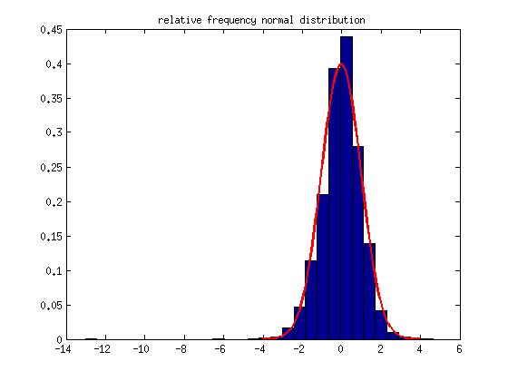
Since the figure does not exhibit substantial deviations, our priorly made assumption of conditional normally distributed returns seems to be sustainable. The next step now is to examine the performance of the GARCH model in a backtesting procedure.
% preallocate VaR vector vars = zeros(numel(quants), numel(DAX.logRet)); for ii=1:numel(DAX.logRet) % get sigma value curr_sigma = sigmas(ii); vars(:, ii) = norminv(quants', coeff.C, curr_sigma); end for ii=1:numel(quants) % get exceedances exceeds = (DAX.logRet' <= vars(ii, :)); % include in figure figure('position', [50 50 1200 600]) plot(DAX.dates([logical(0) ~exceeds]), ... DAX.logRet(~exceeds), '.') hold on; plot(DAX.dates([logical(0) exceeds]), ... DAX.logRet(exceeds), '.r', 'MarkerSize', 12) datetick 'x' set(gca, 'xLim', [DAX.dates(2) DAX.dates(end)], ... 'yLim', [floor(min(DAX.logRet))-1 0]); % include line for VaR estimations hold on; plot(DAX.dates(2:end), vars(ii, :), '-k') % calculate exceedance frequency frequ = sum(exceeds)/numel(DAX.logRet); title(['Exceedance frequency: ' num2str(frequ, 3)... ' instead of ' num2str(quants(ii), 3)]) end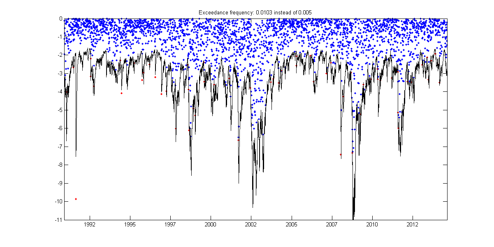 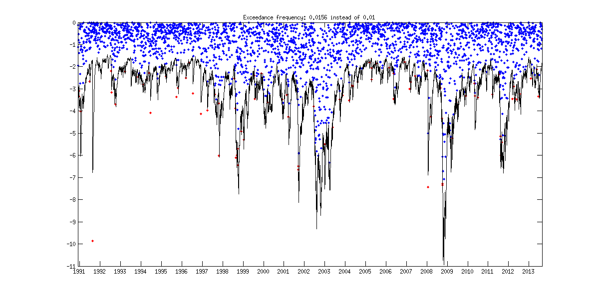 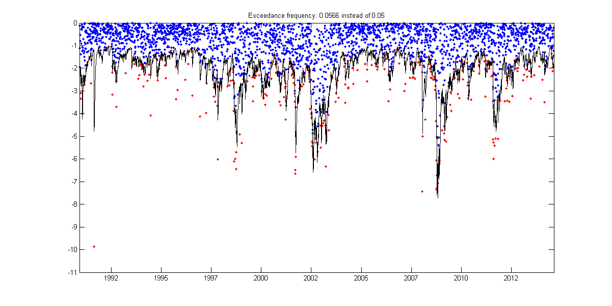
close all